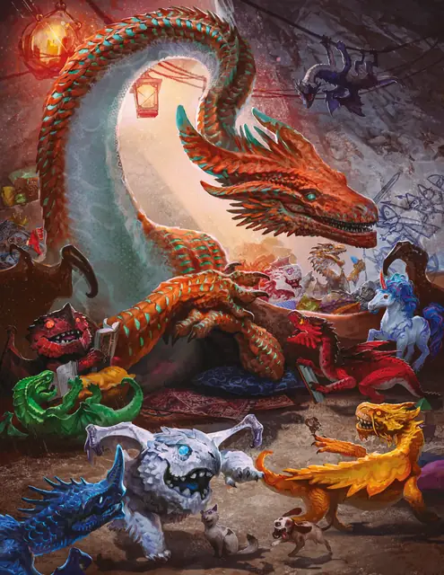

Древний медный дракон
Ancient Copper Dragon
Громадный Дракон (Металлический), Хаотичный Добрый

Класс Защиты 21 Инициатива +15 (25)
Хиты 367 (21к20 + 147)
Скорость 40 футов, Полёта 80 футов, Лазания 40 футов
| мод | спас | ||
|---|---|---|---|
| СИЛ | 27 | +8 | +8 |
| ЛОВ | 12 | +1 | +8 |
| ТЕЛ | 25 | +7 | +7 |
| мод | спас | ||
|---|---|---|---|
| ИНТ | 20 | +5 | +5 |
| МДР | 17 | +3 | +10 |
| ХАР | 22 | +6 | +6 |
Иммунитеты Кислота
Чувства Тёмное зрение 120 футов, пассивное Восприятие 27, Слепое зрение 60 футов
Языки Общий, Драконий
Опасность 21 (33 000 опыта или 41 000 опыта в Логове; БВ +7)
Особенности
Легендарное сопротивление (4/день, или 5/день в Логове). Если дракон проваливает спасбросок, он вместо этого может в нём преуспеть.
Действия
Мультиатака. Дракон совершает три атаки Раздиранием. Он может заменить одну из этих атак использованием (A) Замедляющего дыхания или (Б) Сотворения заклинаний (Пронзание разума, версия 5-го уровня).
Раздирание. Бросок рукопашной атаки: +15, досягаемость 15 фт. Попадание: 19 (2к10 + 8) Рубящего урона плюс 9 (2к8) урона Кислотой.
Кислотное дыхание (Перезарядка 5–6). Спасбросок Ловкости: Сл 22, каждое существо в Линии 90 футов длиной и 10 футов шириной. Провал: 63 (14к8) урона Кислотой. Успех: Только половина урона.
Замедляющее дыхание. Спасбросок Телосложения: Сл 22, каждое существо в 90-футовом Конусе. Провал: Цель не может совершать Реакции, её Скорость уменьшена вдвое, а в свой ход она может совершить только действие или Бонусное действие, но не то и другое сразу. Этот эффект длится до конца следующего хода цели.
Сотворение заклинаний. Древний медный дракон сотворяет одно из следующих заклинаний, не нуждаясь в Материальных компонентах (заклинательная характеристика — Харизма, Сл спасброска заклинаний 21):
Неограниченно: Малая иллюзия, Обнаружение магии, Преображение, Временных хитов, Концентрации, Временные хиты, Пронзание разума, версия 5-го уровня
1/день каждое: Высшее восстановление, Образ, Проекция
Легендарные действия
У этого существа есть 3 использования Легендарных действий (или 4 использования в его Логове); оно может немедленно после окончания хода другого существа потратить одно использование, чтобы совершить одно из следующих действий. Существо восполняет все потраченные использования в начале каждого своего хода.
Приступ уморы. Спасбросок Харизмы: Сл 21, одно видимое драконом существо в 120 футах. Провал: 31 (9к6) Психического урона. До конца своего следующего хода каждый раз, когда цель совершает проверку характеристики или бросок атаки, она бросает 1к8 и вычитает выпавшее число из результата Теста к20. Провал или успех: Дракон не может совершить это действие повторно до начала своего следующего хода.
Встряска разума. Дракон использует Сотворение заклинаний (Пронзание разума, версия 5-го уровня). Дракон не может совершить это действие повторно до начала своего следующего хода.
Наскок. Дракон перемещается на расстояние вплоть до половины своей Скорости и совершает одну атаку Раздиранием.
Бонус мастерства +7
Среда обитания Холмы
Сокровища Магические
Медные драконы
Неизменно дружелюбные и любопытные, большинство медных драконов видят мир как место бесконечных чудес и возможностей. Эти общительные драконы — неиссякаемые источники терпения, гостеприимства и доброго юмора; они стремятся улучшить жизнь — или хотя бы настроение — всякого, с кем имеют дело. Если же их вынуждают защищать себя или друзей, эти драконы предпочитают усмирять недругов замедляющим дыханием и физическими ударами. Лишь в случаях крайней опасности или душевного потрясения они прибегают к смертоносному кислотному дыханию.
Обычно медные драконы обитают в пещерах средь живописных холмов и скал — особенно таких, что служат приметными ориентирами. Драконы эти принимают дары, однако питают слабый интерес к сокровищам, лишённым смысла, сколь бы ценны те ни были. Для них подарки, преподнесённые с душой, а также чувства и воспоминания, что те вызывают, куда важнее признанных шедевров и магических реликвий.
Древние медные драконы исподволь вершат перемены душевным теплом и надёжностью. Свои уютные чертоги они распахивают для друзей — приюты познания и смеха для юных поколений и всех нуждающихся. Эти драконы неустанно высматривают грядущие угрозы и противостоят им, а в остальное время взращивают заповедные обители простых радостей и доброты.
Логова медных драконов
Медные драконы обычно селятся в ветвистых пещерах или обновлённых развалинах.
Местность, в которой находится логово взрослого или древнего медного дракона, изменяется из-за его присутствия, что создаёт следующие эффекты:
• Болтливая живность. Животные Крошечного размера магическим образом получают способность понимать и общаться на Драконьем, пока находятся в пределах 6 миль от логова.
• Приступы смеха. Каждый раз, когда в пределах 1 мили от логова существо, кроме самого дракона и его союзников, выбрасывает «1» на Тесте к20, оно должно совершить спасбросок Мудрости Сл 15; при провале его одолевает приступ смеха, и оно Недееспособно до конца своего следующего хода.
Если дракон умирает или перемещает своё логово в другое место, все эти эффекты мгновенно исчезают.